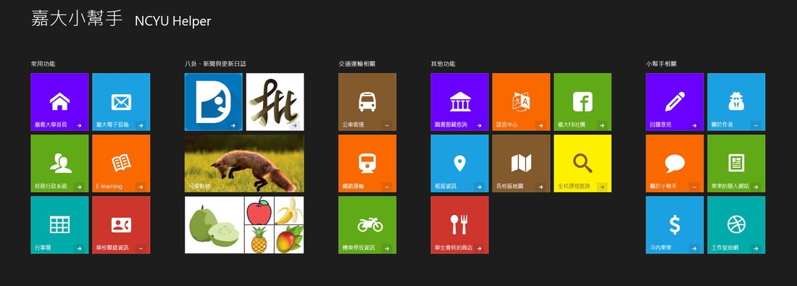
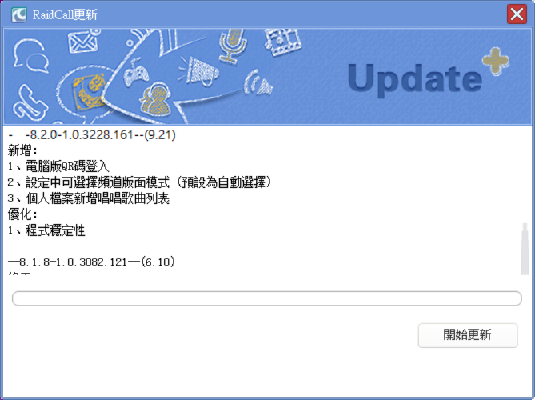
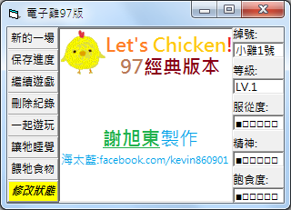
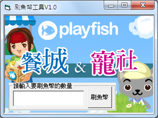

東東的自製軟體
嘉大小幫手網頁版 NCYU Helper for Web Browser
嘉義大學網頁的各項常用功能分散於各個行政單位的頁面中，對於學生來說實在不便，本網頁可讓各位快速開啟學校內常用的網頁與資源，省去慢慢找又找不到的困境。
本網頁於電腦或手機上均可使用！
發布日期：2018/11/25 更新日期：2019/01/29
電腦手機皆可直接使用！
http://bit.ly/twncyu

嘉大小幫手 R8 NCYU Helper R8
嘉義大學網頁的各項常用功能分散於各個行政單位的頁面中，對於學生來說實在不便，本網頁可讓各位快速開啟學校內常用的網頁與資源，省去慢慢找又找不到的困境。
This tool can help you open school website easier.
不會安裝與使用請看使用說明，需要移除舊版本再安裝才能正常執行！
發布日期：2018/10/01
You need to remove old version and install this version to execute.
Release date: 2018/10/01
下載 (Download)：
點我下載 (Click me)
使用說明 (Guide)：
點我進入 (Click me)
問答集 (Ｑ ＆ Ａ)：
點我進入 (Click me)
防止RC語音自動更新
相信有很多人對於RC語音的自動更新通知感到厭煩，不想更新的話，每次都得重複關閉更新通知，RC語音的更新通知來自於liveup.exe，如果刪除該檔案的話，每開一次RC都會再次產生該檔案，而且該檔案似乎有BUG，背景執行時，常占用過高的CPU比例。
所以東東自己製作了一個空殼檔案，取代liveup.exe，並將其設定為唯讀，以達到目的
點我下載LIVEUP.EXE空殼檔案
１．請下載東東製作的liveup.exe空殼檔案。
２．將該檔案移動至RC語音的預設安裝位置 C:\Program Files (x86)\RC語音 或 C:\Program Files\RC語音
３．對著東東製作的空殼檔案右鍵 ＞ 內容 ＞ 勾選唯讀 ＞ 按下確認
４．以後開啟RC語音時，請開啟RC語音的桌面捷徑，每次開啟第一次時都會閃退是正常的，請再開一次就好。

RCNH 餐廳城市數值修改器
本工具可以修改 Restaurant City 遊戲內的數值，藉此達到特殊目的。
目前版本：V6
發布日期：2010/07/04
電子雞97版（花瓶）
懷念小時候人手一隻電子雞嘛？
本小遊戲將帶你回到你的童年。
目前版本：R2
發布日期：2012/07/05

刷魚幣工具
利用Playfish內的BUG來免費獲得魚幣。
目前版本：V1
發布日期：2011/03/04
